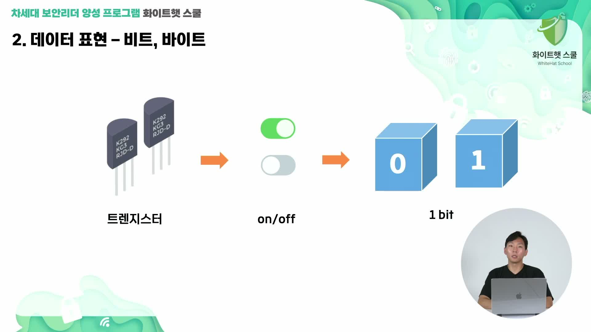
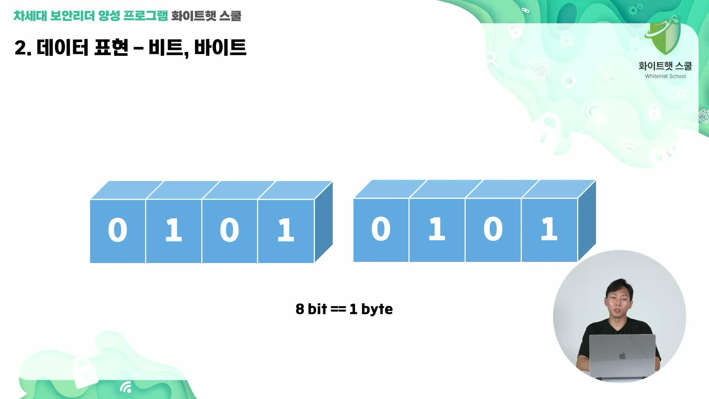
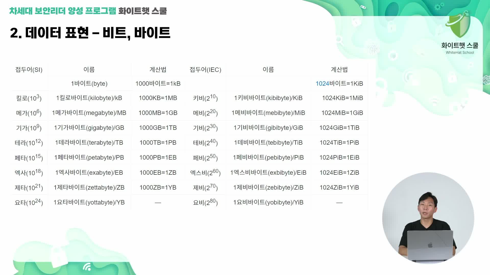
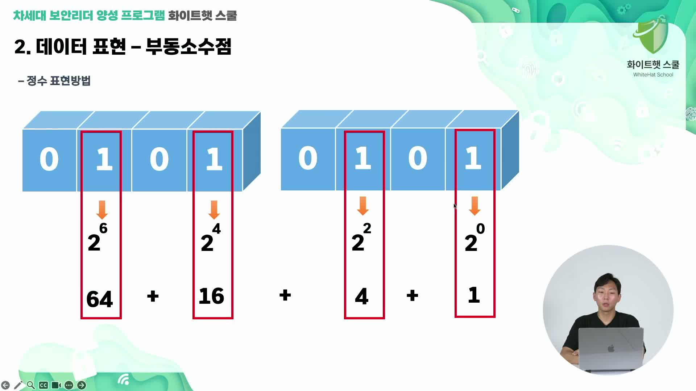
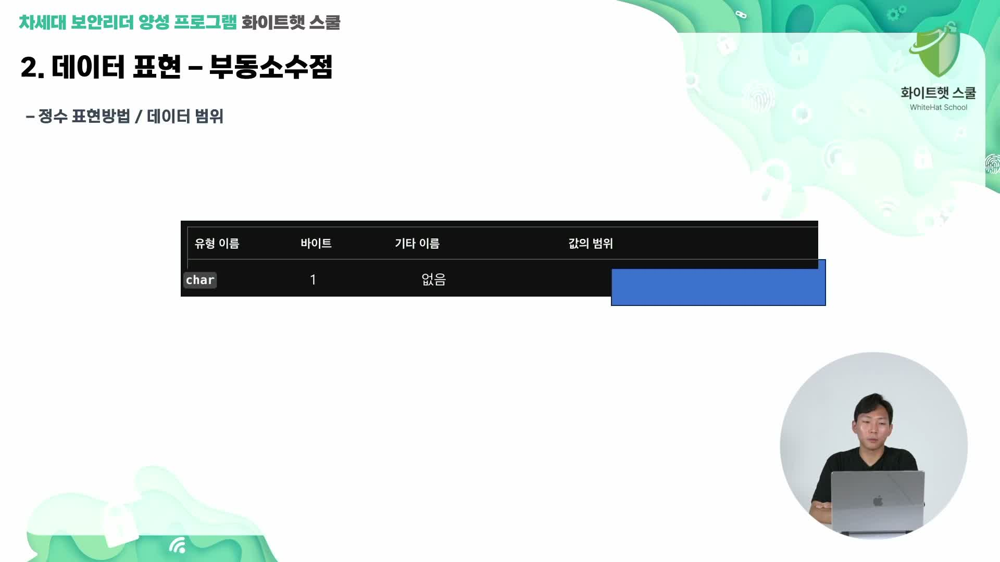
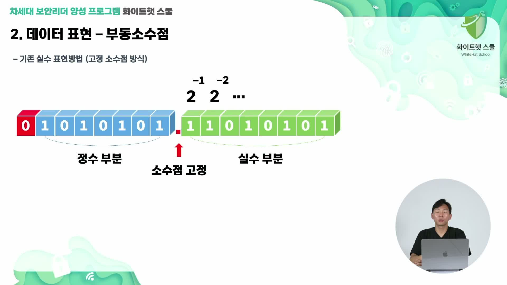
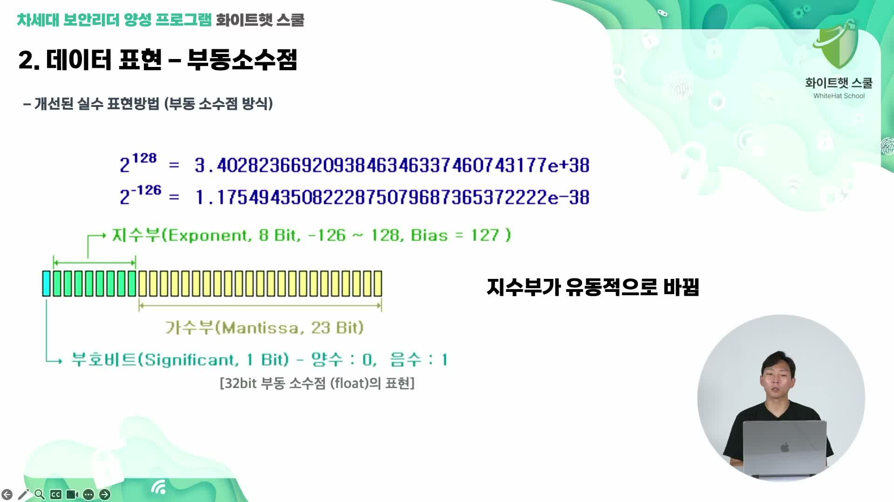
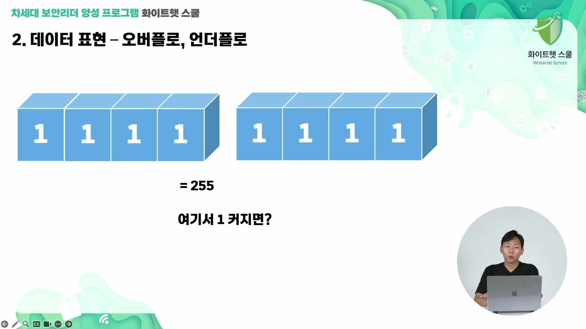
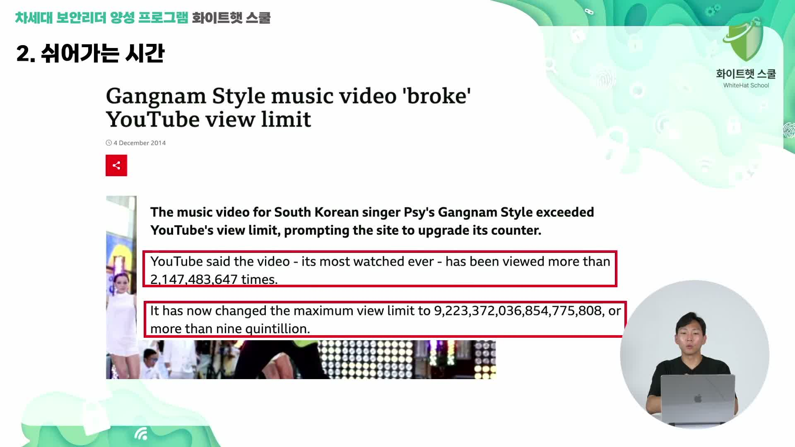

학습 목표
- 비트, 바이트, 단위 체계가 실제 파일 크기와 메모리 감각에 어떻게 연결되는지 이해한다.
- 정수와 실수가 같은 비트 공간을 서로 다른 약속으로 해석한다는 점을 설명한다.
- 오버플로우가 왜 발생하고 보안·개발에서 왜 중요한지 이해한다.
컴구 I 1-3
컴퓨터가 0과 1로 숫자, 문자, 정수, 실수, 프로그램의 상태를 표현하는 방식을 이해한다.
정리와 복습 질문까지 확인했다면 완료로 표시해 둔다.
컴퓨터의 데이터 표현은 결국 0과 1에서 시작한다. 트랜지스터는 전기 신호를 켜고 끄는 스위치처럼 동작한다. 강사는 트랜지스터를 “전기 신호를 넣었다 뺐다 해 주는 on/off 장치”로 설명하고, 켜져 있으면 1, 꺼져 있으면 0으로 해석한다고 말한다.

이 하나의 0 또는 1을 비트(bit)라고 한다. 메모리나 저장 공간 어딘가에 0과 1의 덩어리가 놓이면, 컴퓨터는 그 덩어리를 숫자, 문자, 명령어, 주소, 상태값 등으로 해석한다. 중요한 것은 0과 1 자체가 처음부터 “숫자”나 “명령”으로 태어나는 것이 아니라, 사람이 정한 약속과 프로그램의 해석 방식에 따라 의미가 달라진다는 점이다.
0과 1이 중요한 이유는 논리 연산으로 이어지기 때문이다. AND, OR, NOT 같은 논리 연산은 참과 거짓을 다루고, 컴퓨터 회로는 이런 논리 연산을 조합해 복잡한 작업을 수행한다. 강의에서는 철학이나 논리학의 명제처럼, 참과 거짓으로 정리할 수 있는 문제는 컴퓨터가 처리할 수 있는 문제로 바뀔 수 있다고 설명한다.
전기 신호의 켜짐과 꺼짐
0 또는 1 하나의 정보
AND, OR, NOT으로 조건을 처리
멘토는 컴퓨터가 명확한 논리 문제를 잘 풀지만, 인간의 모든 문제를 컴퓨터가 해결할 수 있다고 보지는 않는다고 말한다. 만약 어떤 비논리적 문제를 컴퓨터가 풀었다면, 그 문제는 결국 컴퓨터가 다룰 수 있는 논리 문제로 재구성된 것이라고 설명한다.
이 관점은 AI 이야기로 이어진다. ChatGPT 같은 도구가 등장했지만 개발자가 사라진다고 겁먹기보다는, AI를 보조자나 동료처럼 활용하는 태도가 필요하다고 말한다. 이 부분은 데이터 표현 강의의 직접 계산 내용은 아니지만, 컴퓨터가 무엇을 할 수 있고 무엇을 하기 어려운지 생각해 보게 하는 사담이다.
비트가 쌓이면 바이트가 된다. 강의에서는 이유를 깊게 파고들기보다, 우선 8비트가 모이면 1바이트라는 약속을 잡고 시작한다. 바이트는 파일 크기, 메모리 크기, 네트워크 데이터 크기를 이야기할 때 가장 자주 만나는 기본 단위다.

바이트가 커지면 KB, MB, GB, TB, PB, EB, ZB, YB 같은 단위로 올라간다. 시험이나 자격증에서는 KB, MB, GB가 약 1000배씩 커진다고 설명하는 경우가 많지만, 컴퓨터 내부에서는 2의 10승인 1024를 기준으로 계산하는 경우가 많다. 강의에서는 10의 3승과 2의 10승이 비슷하다는 감각을 잡으라고 설명한다.

| 단위 | 대략적인 감각 | 강의에서 강조한 포인트 |
|---|---|---|
| bit | 0 또는 1 하나 | 가장 작은 정보 단위 |
| Byte | 8 bits | 문자, 숫자, 파일 크기를 이야기할 때 기본 단위 |
| KB/MB/GB | 실제 파일 크기에서 자주 보는 단위 | 1000배 또는 1024배 감각을 함께 기억 |
| TB 이상 | 대용량 저장 장치, 서버, 데이터 분야에서 자주 등장 | 일상에서는 TB까지 자주 체감 |
문자 하나가 항상 1바이트인 것은 아니다. 인코딩에 따라 한 글자가 1바이트일 수도 있고, 2바이트나 3바이트 이상일 수도 있다. 강사는 “몇 천 줄짜리 소스 코드 파일의 크기가 어느 정도일까” 같은 질문도 이런 단위 감각으로 추론할 수 있다고 말한다. 한 줄의 글자 수와 인코딩 크기, 줄 수를 대략 곱하면 파일 크기를 어림할 수 있다.
소스 코드 파일은 보통 생각보다 작고, 영상 파일은 훨씬 크다. 실행 파일이나 보안 제품 바이너리도 목적에 따라 크기가 중요하다. 특히 특수 목적 시스템에 들어가는 보안 제품은 가볍게 만들어야 하므로, 데이터 크기와 표현 단위를 아는 것이 실무 감각과도 연결된다.
정수는 비트 자리에 2의 거듭제곱 값을 배치해 표현한다. 가장 오른쪽 비트는 2의 0승, 그 다음은 2의 1승, 그 다음은 2의 2승처럼 올라간다. 해당 자리의 비트가 1이면 그 값을 더하고, 0이면 더하지 않는다.

강의 화면의 예시는 01010101이다. 켜진 자리만 더하면 2^6 + 2^4 + 2^2 + 2^0이고, 이것은 64 + 16 + 4 + 1 = 85가 된다. 이처럼 0과 1의 나열은 각 자리의 약속을 알면 10진수 값으로 바꿀 수 있다.
하지만 이진수는 길어지면 사람이 읽기 어렵다. 그래서 컴퓨터 구조, 디버거, 리버싱, 메모리 분석에서는 16진수를 자주 사용한다. 16진수 한 자리는 4비트를 깔끔하게 표현할 수 있으므로 긴 이진수를 훨씬 짧게 보여 준다.
| 표현 | 예 | 의미 |
|---|---|---|
| 2진수 | 0101 0101 | 비트 단위로 정확하지만 길다. |
| 10진수 | 85 | 사람이 일상적으로 읽기 쉽다. |
| 16진수 | 0x55 | 비트 묶음을 짧게 표현해 디버깅에 편하다. |
C 언어의 char는 보통 1바이트 크기다. 그런데 1바이트는 8비트이므로 단순히 양수만 표현하면 0부터 255까지 표현할 수 있다. 하지만 signed char처럼 부호가 있는 자료형은 음수도 표현해야 하므로, 한 비트를 부호를 나타내는 용도로 사용한다.

강의는 여기서 “왜 -128부터 127까지인가”, “왜 128이 아닌가”라는 질문을 던진다. 핵심은 같은 비트라도 어떤 약속으로 해석하느냐에 따라 의미가 달라진다는 점이다. 음수 표현에서는 2의 보수 개념이 등장한다. 간단히 말하면 비트를 뒤집고 1을 더하는 방식으로 음수를 표현한다.
맨 앞자리를 부호 비트(sign bit)로 쓰면, 이 비트가 0일 때는 양수, 1일 때는 음수로 해석할 수 있다. 반대로 unsigned 자료형처럼 부호 비트를 쓰지 않으면 모든 비트를 양수 크기를 나타내는 데 사용할 수 있다. 그래서 같은 1바이트라도 signed char와 unsigned char의 범위가 달라진다.
| 자료형 감각 | 해석 방식 | 결과 범위 예시 |
|---|---|---|
unsigned char | 모든 비트를 양수 크기에 사용 | 0부터 255 |
signed char | 부호와 크기, 2의 보수 규칙으로 해석 | -128부터 127 |
중요한 것은 비트 자체가 “숫자”, “부호”, “문자”로 태어나는 것이 아니라는 점이다. 사람이 자료형이라는 약속을 정하고, 컴퓨터와 프로그램이 그 약속대로 같은 비트 묶음을 해석한다. 이 감각은 나중에 메모리 덤프, 바이너리 분석, CTF 문제를 볼 때 계속 필요하다.
정수와 실수도 같은 비트 공간을 서로 다르게 해석하는 대표적인 예다. 고정소수점은 정수부와 소수부의 위치를 고정해 두고 값을 표현한다. 소수부는 2의 -1승, 2의 -2승처럼 작은 자리로 내려간다.

부동소수점은 소수점 위치가 움직인다. 지수부가 소수점의 위치를 정하고, 가수부 또는 유효숫자 부분이 실제 중요한 숫자들을 담는다. 그래서 큰 수와 작은 수를 비교적 넓은 범위로 표현할 수 있지만, 모든 실수를 정확히 표현하는 것은 아니다.

정수부와 소수부의 칸을 미리 고정한다.
지수와 가수로 소수점 위치를 유연하게 표현한다.
강사는 수학적 세부 공식까지 모두 외우라고 하지는 않는다. 대신 “이 비트 칸들을 어떻게 나누고 해석하느냐에 따라 표현 범위가 달라진다”는 점을 기억하라고 말한다. 정수만 필요한 값인지, 실수가 필요한 값인지, 음수가 필요한지, 어느 정도 범위까지 필요한지를 생각해야 적절한 자료형을 고를 수 있다.
이 설명은 TypeScript 같은 언어의 타입 개념과도 연결된다. JavaScript나 Python처럼 타입을 강하게 드러내지 않는 언어를 먼저 배우면 숫자가 알아서 처리되는 것처럼 보이지만, 실제로는 메모리와 표현 방식의 문제가 뒤에 있다. 타입을 명시하면 값의 범위와 의미를 더 분명히 만들 수 있다.
오버플로우는 자료형이 표현할 수 있는 범위를 넘어섰을 때 발생한다. 부호 없는 8비트가 모두 켜져 있으면 값은 255다. 이 상태에서 1을 더하면 8비트 공간 안에는 256을 담을 칸이 없으므로 값이 돌아가거나, 자료형에 따라 전혀 다른 값처럼 보일 수 있다.

강사는 다섯 자리 숫자 칸에 99999가 들어 있는데 1을 더하는 비유를 든다. 자릿수를 더 만들 수 없다면 고정된 칸 안에서는 다시 0처럼 보일 수 있다. 부호 있는 자료형에서는 부호 비트 해석 때문에 음수로 바뀌는 것처럼 보일 수도 있다.
#include <stdio.h>
#include <limits.h>
int main(void) {
int value = INT_MAX;
printf("%d\n", value);
printf("%d\n", value + 1); // 표현 범위를 넘어서는 예
return 0;
}강의에서는 C로 최대값에 1을 더해 보거나, char 변수를 반복문에서 증가시켜 보며 직접 확인해 보라고 권한다. 오버플로우는 단순한 숫자 실수가 아니라 보안 취약점과도 연결될 수 있기 때문에 중요하다.

멘토는 YouTube의 “강남스타일” 조회 수가 32비트 정수 범위를 넘어 문제가 생겼다는 유명한 사례도 언급한다. 조회 수처럼 계속 증가하는 값을 너무 작은 자료형에 담으면 언젠가 최대값을 넘어선다. 그 결과 마이너스처럼 표시되거나 잘못된 값이 될 수 있어, YouTube는 더 큰 자료형으로 조회 수 표현 방식을 바꾸었다고 설명한다.
정확한 숫자를 모두 외울 필요는 없지만, 32비트 signed int의 최대값이 약 21억, 즉 2,147,483,647이라는 감각은 개발과 CTF, 보안 문제에서 자주 도움이 된다. 언더플로우라는 표현도 나오지만, 이 강의에서는 우선 “표현 가능한 범위를 넘어섰다”는 오버플로우 개념을 중심으로 이해하면 된다.
정리하면 데이터 표현은 트랜지스터의 0과 1에서 시작해 bit, byte, KB/MB/GB 단위로 커지고, 자료형이라는 약속을 통해 정수·실수·부호·소수점·범위를 해석하는 과정이다. 이 약속을 잘못 이해하면 프로그램 버그가 되고, 범위를 넘어서면 오버플로우처럼 보안 문제로도 이어질 수 있다.
긴 STT 원문을 문장 흐름에 맞춰 문단으로 나누어 정리본과 비교하기 쉽게 만든 보기다.
이번 시간에는 컴퓨터가 어떻게 데이터를 표현하는지 배워보도록 하겠습니다. 이제 데이터 표현에서 비트, 바이트라는 기본 단위에 대해서 배워볼 건데요. 일단 트랜지스터라는 게 있습니다. 트랜지스터는 온오프를 해주는, 전기신호를 넣었다 뺐다 해주는 거고요. 이거를 0, 1, 스위치가 들어가 있으면 1이고 꺼져 있으면 0 이런 식으로 해석해주는 그런 도구입니다. 얘가 왜 중요하냐면, 뭐라고 해야 될까요? 공간 속에서 0, 1, 0, 1 켜져 있는 걸 보면서 0, 1, 0, 1의 덩어리들을 보고 숫자나 명령을 구분할 수 있습니다. 그건 뒤에 메모리에 어떻게 저장되는지 보면 조금 이해가 되는데 일단 중요한 건 이 트랜지스터는 0, 1을 나타나게 해주는 거고요. 그 다음, 이 0, 1이 컴퓨터 세계에서 진짜 중요합니다. 저는 개인적으로 제일 중요한 부분 중에 하나라고 생각합니다. 0, 1은 논리 연산의 기본인데, 0, 1을 기반으로 and, or, not 이런 논리 게이트도 짜고 이러는데 일단 0, 1이 왜 중요하냐면, 어떻게 보면 논리학 때문이라고 저는 생각을 하거든요.
대학교 수업에서 논리학 같은 수업을 들으면 논리학이 가장 근간이 그거예요. 어떤 명제를, 참, 거짓으로 나눌 수 있는 걸 명제라고 하거든요. 이 명제는 어떻게 보면 우리가 풀어야 될 문제라고 생각하면 됩니다. 그래서 우리 현실 세계의 문제들을 다 논리로 바꾸면 어떤 명제로 바뀌게 되고 이 명제는 참이냐 거짓이냐로 이렇게 되고요. 이 참, 거짓들이 쌓이고 쌓이고 쌓여서 프로그램이 된다라는 조금 어렵지만 이런 개념이 있습니다. 이 논리학이 또 중요한 이유는 컴퓨터는 결국에는 딱 명확한 면제만 풀 수 있어요. 이 0, 1이라는 세계 안에서 참이냐 거짓이냐라는 이 세계에서 명제가 되냐 안 되냐가 논리냐 비논리냐를 따지는 그런 근간이 되는데 나중에 오토마타라는 수업을 듣게 되면 오토마타가 기계거든요. 이런 회로 같은 걸 통해서 자동으로 돌려주는 기계 이 기계가 과연 인간의 모든 문제를 해결할 수 있냐라고 철학적인 문제를 던졌을 때 저는 그 수업을 들으면서 아니라고 생각을 했거든요. 왜냐하면 일단 논리와 비논리의 영역을 정하기가 되게 힘들어요.
그리고 인간은 그런 게 있잖아요. 비논리적으로 참이라 생각하지만 마음이 생각을 안 해서 그렇게 안 한다거나 이 영역 정하는 게 되게 중요하기 때문에 나누는 게 중요하기 때문에 어떻게 보면 컴퓨터는 비논리에 대한 문제를 사실상 풀기는 되게 어렵고 그리고 이게 또 재미있는 게 뭐냐면 비논리를 만약에 풀었어요. 컴퓨터가 그러면 그때부터 논리를 못 풉니다. 이런 개념이라 컴퓨터는 거의 논리적인 문제만 풀 수 있고 이것 때문에 인공지능이 발전해도 인공지능이 풀 수 없는 문제는 반드시 존재합니다. 이런 걸 알고 있으면 사실 이제 채찍 PT가 나왔을 때 사람들이 막 물어볼 수도 있어요. 왜 이제 개발자나 아니면 컴퓨터 공부하냐 이제 인공지능이 다 해주지 않냐라고 하는데 현업자들은 실제 그렇게 생각 안 하거든요. 쉬운 부분은 인공지능한테 맡겨주고 진짜 어렵고 사고하고 설계하고 그렇게 협의하고 이런 부분은 아직도 인간의 영역이기 때문에 걱정이 안 되는 오히려 AI를 조수, 동료로 생각하는 그런 분위기 때문에 여러분들도 만약에 혹시 걱정을 하셨다면 걱정 안 하셔도 된다고 말씀드리고 싶었습니다.
이거에 대한 내용은 제가 만약에 질문을 주시면 남겨주시면 자료 같은 걸 찾아보거나 좀 더 보충할 수 있도록 해볼게요. 아까 비트에 대해서 설명을 드렸는데 이제부터 이 비트가 쌓이면 바이트가 됩니다. 이유는 크게 중요하네요. 일단 그렇다라고만 알고 있으면 됩니다. 8비트가 쌓이면 1바이트가 되고 이 1바이트가 쌓이면 우리의 좀 잘 아는 그런 단위들이 됩니다. 킬로바이트, 메가바이트, 기가바이트, 테라바이트 이렇게 되고 막 페타, 엑사, 제타, 유타 이런 거는 사실 저도 현안에서는 잘 못 봤던 것 같아요. 테라까지 이제 제 시스템 구성할 때 뭐 하드 살 때 뭐 이렇게 했지 페타는 사실 일반 그런 건 못 본 것 같고 진짜 서버나 데이터 하시는 분들이 볼 수 있는 그런 것 같아요. 근데 이런 단위들이 시험에 나오거나 그런 게 있어요. 학교 시험에 나오거나 자격증 시험에 나올 수가 있어요. 그때 약간 외우려면 이 킬로메가 기간은 10에 3승? 이렇게 늘어나거든요. 3, 6, 9, 10이 이렇게 하면서 우리가 물리 단위 이제 막 킬로미터 그냥 미터에서 킬로미터 이렇게 날 때도 이제 10에 3승 이렇게 나오듯이 이렇게 외우면 좋고 실제 이 크기는 2에 10승씩만큼 증가합니다.
이게 10, 2에 20, 2에 30, 2에 40 그러니까 10에 3은 2에 10과 비슷하다. 3승이 1000이고 2에 10승이 1024거든요. 그래서 이제 좀 비슷하게 보면서 이렇게 올리거든요. 그래서 이거 알아두면 좀 그럴듯합니다. 그리고 예전에 그런 질문을 들은 적이 있어요. 그 뭐 예를 들어서 우리가 글자가 코드를 치면은 글자가 대충 1바이트일 수도 있고 1에서 3바이트거든요. 이제 어떤 그 인코딩 방식에 쓰냐에 따라서 이 데이터 크기가 달라지는데 어쨌든 소스 코드의 평균적인 크기 그러니까 파일 크기는 얼마나 될까 이런 질문을 한 적이 있어요. 뭐 삼성에 다니시는 어떤 분이 멘토링을 왔는데 만약에 이 파일이 몇 천 줄 정도 있어 그 몇 천 줄은 데이터 크기로 나타내면 그러니까 파일로 나타내면 얼마 정도 될까 이거를 면접 질문을 준다고 하는데 그때 당시에는 그냥 잘 모르니까 모른다 라고만 대답을 했지만 지금 만약에 막 지금 당장에 많이 생각을 한다면 논리를 하나하나씩 이렇게 만들 것 같아요. 뭐 1에서 3바이트가 이제 한 글자당 뭐 이렇게 나오는데 우리가 한 줄에 코딩하면은 뭐 대량 뭐 2에서 30씩 잡는다 치고 뭐 제일 많이 잡았을 때 뭐 한 줄에 90바이트 뭔데 90바이트면 큰일 나고요?
아 큰일 나지 않으세요. 어쨌든 90바이트고 90바이트를 뭐 몇 천 줄 곱해서 이 정도 나올 것 같습니다. 하면은 그게 좀 그럴 듯 하거든요. 그래서 이런 거 알아두면 좋고요. 그리고 실제로 제가 현업에 있으면 그 소스코드 파일을 이렇게 직접 보잖아요. 보면은 되게 큰 파일도 있고 작은 파일도 있는데 큰 파일이라고 해서 막 그 우리들이 생각하는 그니까 몇 백 메가 그니까 100메가 이렇게 넘어가지 않네요. 생각보다 100메가는 되게 큰 단위예요. 우리가 영상이나 이런 걸 볼 때 막 100메가 막 1기가 막 이런 거 우습지만 이제 그 텍스트로 내려가게 되면은 좀 적어요. 그리고 실행 파일 이제 바이너리로 가면은 그것도 생각보다 좀 적게 돼요. 저 같은 경우에는 이제 경량화된 보안 제품을 만들다 보니까 특수 목적 시스템에 들어가는 그런 시스템에 들어가는 프로그램은 좀 가벼워야 되거든요. 그래서 우리도 실제 바이너리 크기가 되게 좀 작아요. 100메가까지는 안 갔던 걸로 기억을 해서 이런 표현 방법을 좀 익숙해지시면 좋을 것 같습니다. 다음으로 설명 드릴 거는 이제 이것도 사실 소양인데요.
그러니까 여러분들이 이거는 좀 각자 좀 딥하게 보셔도 도움이 되고 도움이 될 수도 있고 안 될 수도 있고 이게 좋으면 도움이 되는 거고 아니면 아닌 건데 알아두면 프로그래밍에도 도움되는 지식일 수 있습니다. 일단 부동소수점에 대해서 설명을 드릴 건데 부동소수점 이전에 일단 일반적으로 우리가 컴퓨터 세계에서 0101로 어떻게 정수를 표현하는지 차근차근 한번 알아보겠습니다. 이제 그 특정 위치가 이제 트랜지스터라고 생각할게요. 이 공간들을 뭐 중요하지 않습니까? 근데 이 특정 위치에 1이냐 0이냐에 따라서 숫자를 표현할 수 있습니다. 그렇게 약속을 했어요. 이 공간에 이런 식으로 이렇게 박스를 이렇게 8개 갖다 놓고 이 첫째 자리가 켜지면 숫자 뭐 둘째 뭐 이렇게 하기로 했는데 이제 이 페이지에서 보시면 이렇게 나옵니다. 우리는 이제 1, 2, 3, 5, 5, 5, 5, 5, 5, 6, 7, 8, 이 8개에서 이제 첫 번째가 켜지면 2의 0승에 해당하는 숫자가 켜졌다. 그 뒤로는 이제 2의 2승이 이렇게 되는데 이게 이진수 표현 방식이라서 이렇게 된 것도 있습니다.
컴퓨터가 이제 0, 1이고 0, 1은 0, 1밖에 안 날 테니까 이제 2진수를 쓰고 2진수는 이 자리마다 2의 0승 10진수는 참고로 이제 똑같이 들어갑니다. 이 밑에 수가 10 이렇게 들어갑니다. 그래서 이제 2의 0, 2의 1, 2, 3 이렇게 쭉쭉쭉쭉 올라갑니다. 그래서 이 해당하는 부분에 신호가 켜졌다 하면은 이 켜진 것들을 이제 다 취합을 해요. 다 취합을 하면은 지금 여기에 해당하는 거 2, 여기에 해당하는 거 4, 16, 64, 이걸 전체 다 더했을 때 85라서 이 10, 10, 10, 10, 10 여기서 있는지 여기서 있는지 잠깐 헷갈리긴 하는데 만약에 여기서 읽었을 때 뭐 101, 01, 02, 85다 라는 거를 알 수 있습니다. 이거를 실제로 우리가 막 쓰진 않고 이렇게 쓰면은 너무 길고 복잡해지잖아요. 그래서 우리는 사실 그 16비트, 16진수를 주로 씁니다. 16진수면은 이 지금 8개인데 이 16개 덩어리를 묶어 가지고 숫자 하나를 표현하는데 써요. 그래서 그렇다라고만 일단 알고 있으면 좋을 것 같습니다. 자 이제 질문을 하나 드리겠습니다.
아까 다시 이제 돌아오면 1비트가 1바이트잖아요. 그러니까 우리가 컴퓨터 프로그래밍 C를 하다 보면 자료형이라는 걸 배웠는데 자료형마다 크기가 있어요. 그 크기를 이제 유추, 그러니까 이제 다 정해놨는데 지금 이 캐릭터 자료형의 크기는 이제 1바이트거든요. 이 1바이트의 값의 범위를 한번 유추해 보도록 하겠습니다. 이걸 유추하려면 이제 다시 돌아갔을 때 이 각각의 수가, 각각 공간이 여기부터 여기까지 나타내는 거고 그러면 이게 만약에 다 켜졌을 때 뭐 얼마가 될까 뭐 이런 거를 이제 생각을 해봐야겠죠. 그런 거를 고려를 하면은 뭐 나중에 직접 해보면 이제 나오겠지만 기본적으로 마이너스 128에서 127까지 범위입니다. 근데 여기서 뭔가 이상하다라고 생각을 하실 수도 있어요. 일단 첫 번째, 아까 마이너스를 설명하지 않았는데 마이너스가 나왔고 두 번째는 2에 17, 여기서 이제 천천히 올라가면 4, 8, 16, 32, 64, 128 이렇게 될 것 같은데 뭐 틀릴 수도 있고 128인데 일단 왜 127까지 밖에 안 되지? 뭐 이런 것도 있습니다.
이거는 일단 결론부터 말씀드리면 뭐 이 보수라는 개념 때문에 이런 게 생긴 거고 그리고 이제 이 음수가 생긴 이유는 다음 페이지에 보게 되면 아까는 이렇게 일렬로 나와 있었는데 여기서 제일 중요한 개념이 나옵니다. 이제 그 공간마다 우리가 뭔가 특징을 줄 수가 있어요. 이걸 아는 게 사실 되게 좀 중요해요. 내가 뭐 이진수 때문에 뭐 이렇게 표현된다 뭐 이렇게 된다 이런 것도 사실 알아야 되지만 중요한 거는 이 공간을 내가 필요에 따라서 바꿀 수 있다. 그래서 이제 맨 마지막 이걸 다 수에 쓸 수도 있고 이 정수이기 때문에 부호를 표현하는 데도 쓸 수 있습니다. 그래서 맨 앞자리를 사인비트라고 해서 부호를 나타내는데 쓰고요. 이게 이제 꺼져 있으면 플러스고 켜져 있으면 마이너스입니다. 그래서 얘가 빼버리기 때문에 이 단위만 들어가서 이렇게 아까 말씀드린 그 데이터 범위가 나오고요. 음 보수 개념은 좀 여기에는 사실 못 넣었지만 제가 나중에 오프라인에서 설명을 드리거나 아니면 한번 찾아봐도 재미있으실 것 같아요. 이렇게 거꾸로 뒤집었으면 이제 지금 이 플러스에서 이 비트를 다 반전시키면 이제 음수가 되잖아요.
그 음수에다가 플러스 1 더하면은 딱 그 수가 나오거든요. 우리가 표현하고자 하는 이게 만약에 이게 아까 한 85였나요? 85에서 이걸 비트 전체 반전시킨 다음에 여기서 또 나온 숫자들을 보고 1만 더하면은 딱 내가 양수에서 표현한 그 수가 나오는데 이걸 보수라고 합니다. 그래서 이것도 찾아보면 재미있습니다. 그래서 이걸 표현한, 이걸 설명드린 가장 큰 이유는 이 공간 같은 거는 뭐 이런 의미가 있을 수도 있다. 내가 어떻게 하냐에 따라서 숫자를 나타내는 데 쓸 수도 있고 부호를 나타내는 데 쓸 수도 있습니다. 자 이렇게 정수에 대해서 알아봤는데 우리가 배울 거는 이제 소수잖아요. 소수를 보면은 이제 부동 소수점 이전에 기존에는 실수를 표현할 때 고정 소수점 방식을 설명했어요. 그래서 이게 아까 말씀드린 설명이랑 약간 연결이 돼요. 아까 이제 부호를 나타내는 공간이 따로 있듯이 이 실수를 표현할 때도 정수를 표현하는 부분이랑 실수를 표현하는 부분이 나눠져 있고 이걸 이제 나누는 기준, 결국 소수점 이게 고정돼 있어서 고정 소수점 방식이라고 해요.
그래서 아까는 이제 정수 부분은 2에 0, 2에 1 이렇게 갔다면은 실수 부분은 2-1, 2-2 이렇게 하면서 축축축축축 가고 있고요. 그래서 이거를 이제 딱 맞춰서 이제 절반씩 절반씩 해서 나타내는 이걸 방식을 이제 고정 소수점 방식이라고 합니다. 이제 부동 소수점 방식을 나타낼 건데 그러니까 말씀드릴 건데 이 개념은 조금 어려워요. 사실 저도 많이 어려운데 일단 중요한 건 아까는 고정돼 있잖아요. 이 부동에서 이제 부가 이제 떠 있을 부라고 하거든요. 핵심만 알면 됩니다. 이 지수부라는 그 소수점의 위치를 결정하는 아까 정수 부분처럼 소수점을 결정하는 위치랑 그 뒤에 이제 소수를 나타내는 가수부가 있는데 이 지수부 가수부가 유동적으로 움직입니다. 이 데이터 표현 방식이 부동 소수점이다 라고 지금까지만 지금 정도에는 딱 이 정도만 알면 되고요. 이것 때문에 우리가 뭐 데이터를 이렇게 선언할 때 정수냐 실수냐 이렇게 나누는 이유는 이것 때문에 그런 거예요. 정수면은 아까 말씀드린 그 딱 모든 부분이 이제 정수만 나타내는 그런 공간으로 이제 사용을 해야 되고 실수면은 뭐 지금처럼 어떤 부분은 지수로 쓰고 가수로 써서 이렇게 해석할 수 있는 그런 공간으로 써서 이렇게 해석할 때 약속을 해주는 것 때문에 이 개념은 매우 중요합니다.
이것이 어떻게 막 표현을 숫자를 표현해 가지고 막 어떻게 하는 거는 좀 수학적인 내용이고 지금 사실 알면 좋아요. 컴퓨터 공부하면서 수학을 알면 좋듯이 알면 좋지만 몰라도 막 엄청 불편하지는 않다. 근데 대신 소양적으로 알고 있으면 나중에 이제 막 내가 그 데이터를 직접 골라야 되잖아요. 어떤 변수를 선언할 건데 이 변수의 타입을 어떻게 하지? 라고 고민할 때 이런 것들을 생각할 수도 있고 이 방식들을 알고 있으면 아까 크기를 알았고 캐릭터형 말고도 다양한 변수들이 있는데 내가 표현하고 싶은 수가 127이 넘어가. 근데 나는 캐릭터를 쓰고 싶어. 데이터 최적화 때문에 조금 줄이고 싶어서 그럼 어떻게 하냐 하면 아까 맨 앞에 자리를 부호비트로 쓴다고 했잖아요. 부호비트를 안 쓰는 자료형도 있습니다. 그러니까 이제 난 무조건 양수로 취급할래 라고 해서 그 공간을 다 그냥 정수로 표현하는 게 있는데 그 이제 unsigned 라고 해서 들어보았을 수도 있고 아닐 수도 있습니다. 그래서 이제 이런 걸 알고 있으면 내가 이제 표현하고 싶은 수의 범위가 뭔지 거기에 따라서 어떤 데이터 타입을 쓰면 좋은지 꽤 좋습니다.
왜냐하면 내가 만약에 0, 1밖에 안 나타낼 건데 막 1바이트 짜리 이런 게 아까 1바이트도 되게 꽤 크잖아요. 1바이트 자료형을 쓰면 사실 이게 좀 메모리 효율이 좀 떨어지거든요. 그러니까 지금 컴퓨터가 되게 발전이 돼 있고 메모리도 낭낭하니까 그런 부분 사실 덜 해도 돼요. 어떻게 보면 컴파일러 땅에서 최적화를 해줄 수도 있고 근데 이거를 알고 있는 거랑 모르고 있는 거랑은 조금 다릅니다. 아무리 이제 그 기술이 좋아져서 우리가 웹 공부할 때 자바스크립트 막 파이썬 이런 거 공부하면은 거기서는 이제 타입을 잘 안 넣었거든요. 정수나 실수에 대한 타입을 잘 안 넣었거든요. 그냥 뭐 알아서 인터프리터가 알아서 이거는 실수네 이건 정수네 이건 뭐 하는데 그렇게 되면 문제가 좀 메모리에 대한 이슈가 있습니다. 그래서 나온 게 타입스크립트라고 저는 이해를 하고 있어요. 그러니까 자바스크립트라는 언어에서 이 타입을 명시를 해줘서 타입을 좀 정해놓고 쓰자. 안 그러면 이제 뭔지 모르고 맨날 할 때마다 그 메모리를 되게 크게 쓰니까. 그래서 이제 나온 게 타입스크립트니까.
이런 거 알고 있으면은 다음에 배울 때 막 그냥 그렇구나 이래서 이런 게 나온 거구나 하고 이해할 때도 좀 더 좋습니다. 자 다음 설명을 드리면은 이제 오버플로와 언더플로라는 개념이 있는데 뭐 뒤에 나오겠지만 언더플로는 사실 그냥 오버플로에 다른 표현 그러니까 없는 표현이라고 사실 하고 오버플로에 대해서 설명을 드리면 지금 우리가 이걸 다 켜졌어요. 아까 다 켰을 때 아까 뭐 제가 잘못 설명드린 게 있긴 한데 그 일곱 번째까지가 아마 128이고 여기가 256이 될 거예요. 근데 이게 0 때문에 그 아마 255까지라고 이게 비트가 다 켜져 있으면 255입니다. 그 아마 다 더하면 255가 나와요. 그러면 이 공간에서의 최대 부호 비트를 안 쓰고 이 비트가 다 켜졌을 때 우리가 표현할 수 있는 수는 255인데 만약에 이 255에서 1이 켜졌어. 그러면 어떻게 될까요? 그러니까 이런 상상을 해 보는 게 조금 좋습니다. 그러니까 이제 제가 이제 말씀드린 내용들을 아 그렇구나 하고 아는 것도 좋은데 들었을 때 만약에 따르게 되면 뭐 아니면 어떻게 되면 이런 식으로 계속 좀 비판적 사고도 하고 궁금증을 계속 두드려 보는 거 되게 좋습니다.
이게 컴퓨터 공부, 개발 공부든 해킹 공부든 되게 도움이 되는 좀 능동적인 학습 방법인데요. 잠깐 생각을 해보면 일단 상상이 안 가죠. 일단 그걸 생각을 해봐야 돼요. 만약에 이게 9라고 생각하시면 이게 1이 아니라 99999예요. 9까지 다 찼어. 여기서 이제 1이 증가하면 어떻게 되나요? 어떻게 되나요? 그러면 좀 더 느낌이 오죠. 다 0으로 바뀝니다. 그러니까 이게 오버플로우입니다. 이런 식으로 내가 표현할 수 있는 범위를 넘어선 거를 이제 오버플로우입니다. 그런데 이거는 뭐 자료형이나 뭐 상황에 따라서 지금은 이렇게 넘어갔다고 이렇게 표현해서 이제 0이라고 하지만 실제로 뭐 0일 수도 있고 음수가 나올 수도 있어요. 그러니까 뭐 데이터형에 따라 다른 거니까 이거에 대한 실습도 해 볼 수 있습니다. 그래서 지금 살짝 말씀드리면 뭐 오버플로우를 검색해서 실습하는 방법도 있고 그러니까 저희가 컴퓨터 공부를 하면서 C를 많이 쓰는데 C를 쓰는 이유가 약간 제일 컴퓨터랑 닿아 있어요. 컴퓨터를 좀 보기 쉬운 데이터나 메모리를 좀 접근하기 쉽고 메모리 조작이 쉽기 때문에 매니지먼트 랭기지 라고 하고 얘를 통해서 제가 말한 거를 이제 실제로 볼 수가 있어요.
그러니까 데이터 자료형을 딱 설정을 하고 여기 최대수만큼 이제 값을 데이터를 딱 설정한 다음에 여기서 이제 1 증가하고 프린터를 찍어보면 이제 오버플로우가 나는 걸 볼 수 있는데 만약에 진짜 해보고 싶다 하면은 캐릭터형 정도 변수를 선언을 해서 반복문으로 1씩 쭉 증가했을 때 어떻게 되냐를 보는 것도 제가 해보진 않았는데 제가 사실 해본 방법은 그 타입마다 맥스 값이 있거든요. 그 맥스 값이 특정 파일에 저장이 돼 있는데 그 맥스 값을 딱 넣어놓고 프린트를 한 다음에 그 맥스 값에다가 1 더해서 프린트를 하면 제일 쉽게 딱딱 볼 수 있습니다. 이 부분 만약 해보시고 안 되면 제가 도와드릴 테니까 문의 주시면 될 것 같아요. 오버플로우는 아까 말씀드렸다시피 이게 잘못된 표현이라고 하더라고요. 이게 커져서 근데 이게 약간 그렇게 생각할 수도 있어요. 아까 마이너스 127, 뭐 이렇게 128 뭐 이런 식으로 이제 범위가 있을 때 쭉 내려가다가 값이 바뀔 수도 있어요. 반대로 이제 사인비트가 1 켜져 있고 거기서 이제 나머지 수가 11111 증가하다가 나머지가 또 탁 켜졌을 때 또 수가 바뀔 수가 있어요.
이거를 언더플로우라고 하는데 이게 틀린 표현이라고 하니까 일단은 그냥 오버플로우 내가 표현할 범위를 넘어섰다 정도만 알고 있으면 될 것 같습니다. 잠깐 쉬어가는 시간을 가지면 이 오버플로우에 대한 사례가 하나 있습니다. 이게 저희 나라랑도 관련이 있는데 이제 강남스타일 뮤비가 그 유튜브에 그 최다 조회수를 뚫었어요. 이게 무슨 말이냐면 여기서 이제 32비트 정수 32비트면은 4바이트죠. 4바이트 정수가 표현할 수 있는 이게 제가 기억이 잘 안 나는데 2억이면 어쨌든 2억인가 하는 수를 넘겨버렸기 때문에 그 유튜브 조회수가 마이너스로 나오고 그것 때문에 이제 유튜브 팀에서는 이제 다음엔 절대 안 깨지게 더 큰 데이터 타입으로 그 조회수를 나타내는 자료형을 바꿨다 라고 하는 일화가 있습니다. 이런 거를 알면은 좀 이해가 되죠. 아 그치 우리가 쭉 이런 거 배웠지 이런 일 충분히 그리고 실제로도 일어나구나 그럴 수 있고 지금에는 잘 없지만 예전에도 이런 게 해킹 문제로도 나왔던 거 같아요. 그래서 이 숫자들 있잖아요. 2147 뭐 이런 거는 조금 알고 있으면 언젠가 좀 도움이 되는 정수 4바이트 정수의 최대값 데이터의 최대값 이라고 이제 알고 있으면은 어딘간 쓸 수 있을 것 같긴 합니다.
지금까지 데이터 표현에 대해서 배워봤고요. 이제 0101부터 시작했고 트랜지스터라는 친구가 이제 0101을 이제 나타내 주는 친구고 이 0101을 이제 비트라고 표현을 했고 이 0101을 사실 되게 컴퓨터에서 중요한 개념 이제 뭐 논리학이라는 개념이고 이제 이것들을 쭉 모아서 1비트가 8바이트라는 게 됐고 8바이트가 또 모이다 보니까 1바이트가 또 모이다 보니까 킬로바이트, 메가바이트 우리 단위들이 됐었고 이 단위를 또 알아두면 나중에 우리가 컴퓨터 살 때 그 하드디스크나 SSD 살 때 산정할 때 도움이 되겠죠. 아까 말한 뭐 면접설 같은 거 얘기하고 내가 주로 사용할 컴퓨터가 얼만큼 데이터를 차지할까? 라고 예상할 수 있죠. 내가 어떤 작업을 하냐에 따라서 동영상 같은 큰 파일들을 많이 다루면 당연히 이제 용량을 늘리는 거고 내가 정말 코딩만 할 거고 중요한 작업들은 다 원격 붙여서 할 거야. 그러면 사실 256기가도 좀 클 수 있습니다. 물론 추천드리진 않지만 어쨌든 그런 거 보면서 데이터 자료형, 표현 방법, 크기 이런 거 알면 혹시 도움이 된다라는 거를 알 수 있었습니다.